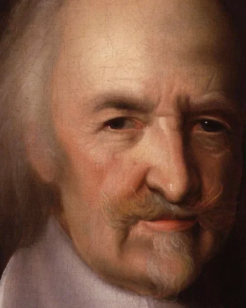
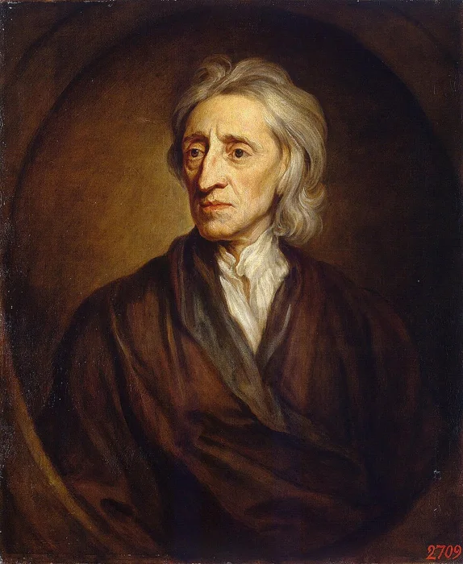
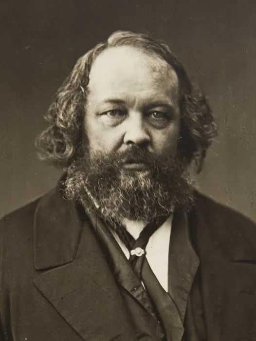
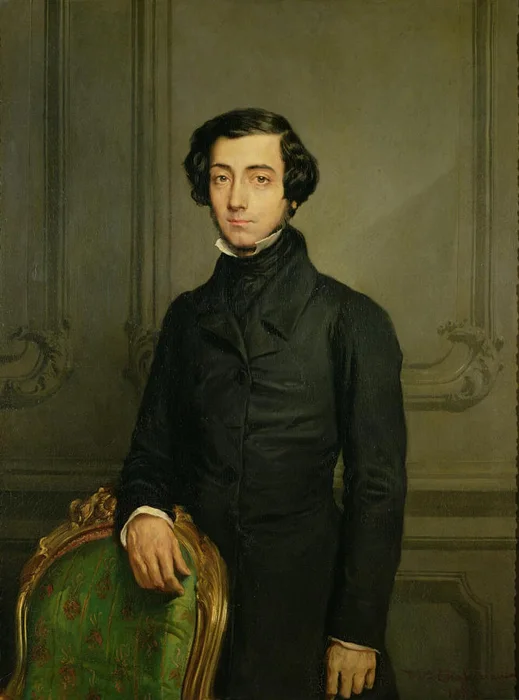
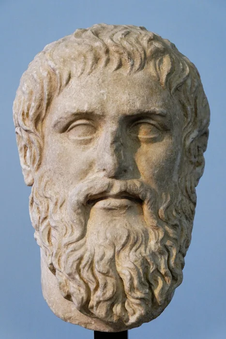
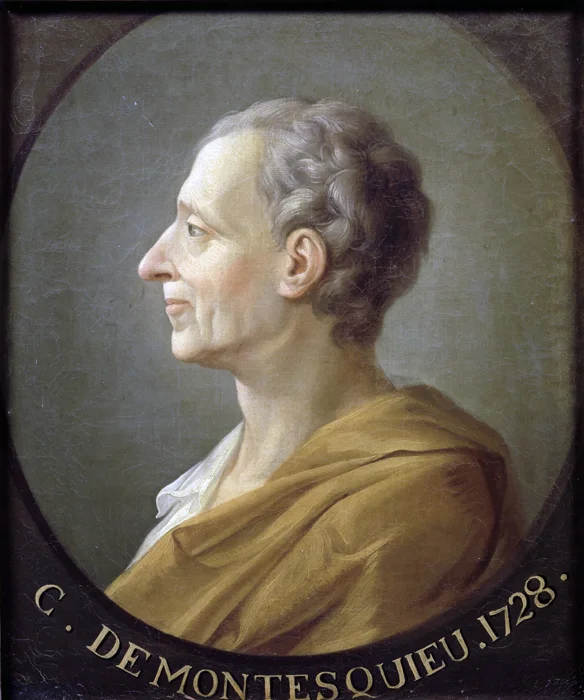

Introduction : un protecteur qui a le droit de contraindre
Nous vivons du matin au soir sous l'autorité de l'État. Il fait les lois, lève l'impôt, rend la justice, et il est le seul à pouvoir nous y contraindre par la force.
Pourtant, c'est aussi vers lui que nous nous tournons pour être protégés. Voilà le double visage qu'il faut comprendre : l'État est à la fois ce qui nous défend et ce qui nous commande. Nietzsche n'en retient que le second : « L'État, c'est le plus froid de tous les monstres froids » (Ainsi parlait Zarathoustra, 1883-1885). A-t-il raison ?
Partons d'une première définition. L'État est l'ensemble des institutions politiques, juridiques, militaires, économiques qui exercent une autorité sur les citoyens d'un pays. Le mot vient du latin status, « ce qui tient debout » : l'État est ce qui dure, alors que les dirigeants passent. Encore faut-il ne pas le confondre avec trois réalités voisines.
→ À ne pas confondre
L'État ≠ le gouvernement
Le gouvernement est l'équipe qui dirige à un moment donné : il change. L'État est l'ensemble des institutions permanentes : il demeure.
L'État ≠ la nation
La nation est une communauté unie par une histoire et la volonté de vivre ensemble. L'État est une organisation politique et juridique. Une nation peut exister sans État.
L'État ≠ la société
La société est le tissu des relations entre les individus : familles, travail, échanges, associations. L'État est l'instance qui la règle par la loi.
L'État est-il la condition de notre sécurité et de notre liberté, ou la forme la plus achevée de la domination ?
Qu'est-ce que l'État ? Un pouvoir pas comme les autres
Bien des pouvoirs s'exercent sur nous : celui d'un parent, d'un employeur, d'un chef de bande. Qu'a donc de particulier celui de l'État ?
1 — La définition de Max Weber
On pourrait vouloir définir l'État par ses buts : la justice, la paix, la prospérité. Weber écarte cette piste, car il n'existe presque aucune tâche dont un État ne se soit un jour occupé. Ce qui lui est propre, ce n'est pas ce qu'il vise, c'est le moyen dont il dispose seul : la contrainte physique.
L'État est une communauté humaine qui, dans les limites d'un territoire déterminé, revendique avec succès pour son propre compte le monopole de la violence physique légitime.
Chaque mot de cette phrase compte. Il faut la lire lentement.
- « monopole »
- L'État est seul à détenir ce droit. Un particulier ne peut user de la force que si l'État l'y autorise, comme dans la légitime défense.
- « violence physique »
- Arrêter, emprisonner, faire la guerre : derrière chaque loi se tient la possibilité de contraindre. C'est le rôle de l'armée, de la police et de la justice.
- « légitime »
- Cette violence est reconnue comme justifiée par ceux qui y sont soumis. C'est ce qui sépare le policier du bandit, alors que tous deux peuvent être armés.
- « revendique avec succès »
- Il ne suffit pas de réclamer ce monopole : il faut l'obtenir dans les faits, c'est-à-dire que personne d'autre ne rende la justice ou ne lève une armée.
Cette définition est fondatrice pour deux raisons. Elle est d'abord descriptive et non normative : Weber ne dit pas que l'État est bon ou juste, il dit à quoi on le reconnaît. Elle pointe ensuite la tension centrale de toute la notion : la violence devient légitime dès lors qu'elle est exercée par l'État.
Se venger soi-même d'un vol ou d'une agression, c'est exercer une justice privée. Même si la cause est bonne, elle est par définition illégitime : seul l'État peut punir. Là où des milices rendent la justice à sa place, on ne parle plus tout à fait d'un État.
2 — Les quatre éléments constitutifs de l'État
De la définition de Weber, on tire les quatre éléments sans lesquels il n'y a pas d'État. Les trois premiers en sont les conditions ; le quatrième est sa marque propre.
À quoi reconnaît-on un État ?
Quatre éléments, tous nécessaires.
Sans territoire, pas d'État : seulement un gouvernement en exil.
3 — D'où vient la légitimité ?
Tout repose donc sur un mot : légitime. Car la force seule ne fait pas un État. Rousseau l'a dit d'une phrase : « Le plus fort n'est jamais assez fort pour être toujours le maître, s'il ne transforme sa force en droit, et l'obéissance en devoir » (Du Contrat social, I, 3). Un pouvoir qui ne tiendrait que par la peur s'effondrerait au premier signe de faiblesse.
Pourquoi, alors, les hommes obéissent-ils ? Weber distingue trois raisons de tenir un pouvoir pour légitime.
Les trois fondements de la légitimité selon Weber
Trois réponses à la question : « pourquoi est-ce à lui que j'obéis ? »
Dans la réalité, ces trois légitimités se mêlent. L'État moderne repose surtout sur la troisième.
- L'État se définit par son moyen, non par ses buts : le monopole de la violence physique légitime.
- Il suppose un territoire, une population et la souveraineté.
- Sa force ne tient que si elle est reconnue comme légitime, par tradition, par charisme ou par la loi.
L'État est le seul pouvoir dont la contrainte est tenue pour légitime.
Weber décrit, il ne justifie pas. Qu'est-ce qui peut rendre ce pouvoir vraiment légitime ?
Pourquoi l'État ? Le contrat social
Aux XVIIe et XVIIIe siècles, trois philosophes posent la même question par la même méthode : imaginer les hommes sans État, pour voir ce qu'il leur apporte.
1 — La méthode : partir de l'état de nature
Pour Aristote, la question ne se posait pas : l'homme est par nature un animal politique, et la cité existe aussi naturellement que la famille. Les penseurs du contrat rompent avec cette idée. Pour eux, l'État est un artifice : il n'a pas toujours existé, il résulte d'une décision des hommes. On peut donc demander ce qui a pu les y pousser, et à quelles conditions cette décision les oblige.
- État de nature
- La situation des hommes sans lois ni autorité commune. Ce n'est pas une époque de l'histoire, mais une expérience de pensée : on retire l'État pour voir ce qui reste.
- Contrat social
- L'accord par lequel les hommes quittent l'état de nature et instituent un pouvoir commun. Il fonde l'obéissance sur le consentement, non sur la force ou la tradition.
- Souverain
- Celui qui détient le pouvoir suprême de faire la loi : un roi chez Hobbes, le peuple chez Rousseau.
Tout dépend alors du point de départ. Selon ce que sont les hommes avant l'État, l'État dont ils ont besoin n'est pas le même.
2 — Hobbes : la sécurité avant tout

Hobbes écrit pendant les guerres civiles anglaises : il sait ce que devient un pays quand l'autorité s'effondre. Sans État, dit-il, les hommes vivent dans un état de nature qui conduit inévitablement à la violence. Non parce qu'ils seraient méchants, mais par un enchaînement très simple.
Pourquoi des hommes égaux se font la guerre
L'état de nature selon Hobbes, en trois temps.
La vie y est, écrit-il, « solitaire, misérable, pénible, animale et brève » (Léviathan, chapitre XIII). On résume souvent cette thèse par une formule qu'il reprend au poète latin Plaute dans Le Citoyen (1642) : l'homme est un loup pour l'homme.
La raison montre alors la sortie. Puisque tous ont peur de mourir, tous ont intérêt à la paix. Chacun accepte donc d'abandonner sa liberté naturelle, à condition que les autres en fassent autant, au profit d'un souverain assez fort pour tenir tout le monde en respect.
Du contrat au Léviathan
Le raisonnement de Hobbes.
Léviathan : monstre de la Bible, dont Hobbes fait l'image d'un pouvoir qu'aucun autre ne peut égaler.
On obéit donc à l'État non parce qu'il est juste ou démocratique, mais parce qu'il protège contre le chaos. Hobbes préfère la monarchie absolue : un pouvoir faible ou divisé ramènerait la guerre civile. Sans État, c'est la guerre ; avec un État fort, il y a la paix.
Un État tout-puissant n'est-il pas aussi dangereux que la guerre qu'il empêche ? Qui nous protège de notre protecteur ?
Le pire des pouvoirs vaut mieux que l'absence de pouvoir. Limiter le souverain, c'est rouvrir la porte à la guerre civile.
C'est précisément cette réponse que Locke refuse.
3 — Locke : un État pour protéger des droits

Locke part d'un autre état de nature. Les hommes n'y sont pas en guerre permanente : ils sont libres, égaux et raisonnables. Surtout, ils possèdent déjà, avant tout État, trois droits que personne ne leur a donnés et que personne ne peut leur retirer.
Les trois droits naturels
Ils existent avant l'État : l'État ne les crée pas, il les garantit.
Pourquoi alors quitter l'état de nature ? Parce qu'il a un défaut : sans autorité commune, chacun se fait justice lui-même, et l'on juge mal quand on est juge de sa propre cause. Les hommes créent donc un État, mais sa fonction est limitée : protéger les droits naturels, et rien de plus.
La conséquence est décisive. Si l'État n'existe que pour protéger ces droits, un État qui les viole perd sa raison d'être. Locke refuse l'État absolu : le pouvoir doit être borné par les lois et par le consentement du peuple. Et si un gouvernement devient injuste ou tyrannique, les citoyens ont le droit de lui résister et de le renverser.
Partout où les lois cessent, ou sont violées au préjudice d'autrui, la tyrannie commence.
Locke est ainsi le père du libéralisme politique et l'un des inspirateurs des démocraties modernes.
4 — Rousseau : obéir sans cesser d'être libre
Rousseau change encore le point de départ. Contrairement à Hobbes, il pense que l'homme est naturellement bon : dans l'état de nature, les hommes vivent libres, relativement égaux, guidés par l'amour de soi et la pitié. C'est la société qui les corrompt, et le moment décisif est l'apparition de la propriété privée.
Le premier qui, ayant enclos un terrain, s'avisa de dire : Ceci est à moi, et trouva des gens assez simples pour le croire, fut le vrai fondateur de la société civile.
Avec la propriété viennent les inégalités, puis la jalousie, la compétition et la domination. Rousseau est donc sévère pour les États qui existent : ils servent souvent les intérêts des plus riches au lieu de l'intérêt commun.
Faut-il alors revenir en arrière ? Non : il faut un autre contrat. Le problème à résoudre est le plus difficile de tous : trouver une forme d'association par laquelle chacun, « s'unissant à tous, n'obéisse pourtant qu'à lui-même, et reste aussi libre qu'auparavant » (Du Contrat social, I, 6).
La solution tient en une notion : la volonté générale. Chacun renonce à sa volonté particulière, qui ne regarde que son intérêt, pour obéir à la volonté générale, qui vise ce qui est bon pour l'ensemble de la communauté. Or cette volonté, c'est le peuple lui-même qui l'exprime en faisant la loi. Le citoyen qui obéit à la loi n'obéit donc à personne d'autre qu'à lui-même.
L'obéissance à la loi qu'on s'est prescrite est liberté.
L'État légitime, pour Rousseau, est donc celui où le peuple est souverain et fait lui-même les lois.
La volonté générale n'est pas la dictature de la majorité. Elle n'additionne pas les intérêts particuliers : elle vise le bien commun. Une majorité qui voterait pour son seul avantage n'exprimerait pas la volonté générale.
5 — Trois contrats, trois États
Les trois auteurs usent de la même méthode et arrivent à trois États différents. Le tableau montre que tout se joue au départ : dis-moi ce qu'est l'homme sans État, je te dirai quel État il lui faut.
| HobbesLéviathan, 1651 | LockeTraité du gouvernement civil, 1690 | RousseauDu Contrat social, 1762 | |
|---|---|---|---|
| L'homme sans État | Un rival : la guerre de chacun contre chacun. | Libre, égal, raisonnable, mais juge de sa propre cause. | Bon et libre, puis corrompu par la propriété. |
| Le but du contrat | Survivre : obtenir la paix. | Garantir des droits que l'on a déjà. | Retrouver la liberté dans la loi commune. |
| Ce que l'on cède | Sa liberté naturelle, remise au souverain. | Le droit de se faire justice soi-même. | Sa volonté particulière. |
| L'État qui en sort | Un souverain absolu, le Léviathan. | Un gouvernement limité par les lois et le consentement. | Un peuple souverain qui fait lui-même ses lois. |
| Peut-on résister ? | Non : ce serait revenir à la guerre. | Oui, si le gouvernement devient tyrannique. | Un pouvoir qui n'exprime plus la volonté générale n'est plus légitime. |
- Pour les penseurs du contrat, l'État est un artifice fondé sur le consentement, non un fait de nature.
- Hobbes le justifie par la sécurité, Locke par la protection des droits, Rousseau par la liberté.
- Plus on se méfie de l'homme, plus on veut un État fort ; plus on lui fait confiance, plus on limite l'État ou on le confie au peuple.
Un État est légitime s'il repose sur le consentement et sert ceux qui l'ont institué.
Le contrat dit ce que l'État devrait être. Rousseau lui-même voit que les États réels servent les plus riches. Que fait vraiment l'État ?
Le soupçon : l'État au service de qui ?
Au XIXe siècle, trois auteurs cessent de demander ce que l'État doit être. Ils regardent ce qu'il fait. Et le portrait change.
1 — Marx : l'État, instrument d'une classe
Les théories du contrat supposent un État placé au-dessus de la société, arbitre de l'intérêt général. Marx refuse cette image. Fondateur du matérialisme historique, il part de l'économie : dans la société capitaliste, il n'y a pas un peuple uni, mais une lutte entre deux classes aux intérêts opposés. L'État ne peut pas être neutre dans cette lutte.
De quel côté se tient l'État ?
La société capitaliste selon Marx : deux classes, et l'État entre les deux.
Le gouvernement moderne n'est qu'un comité qui gère les affaires communes de la classe bourgeoise tout entière.
L'« intérêt général » n'est donc qu'un masque : c'est l'intérêt d'une classe qui se fait passer pour celui de tous. Marx en tire une conséquence radicale. Si l'État n'existe que parce qu'il y a des classes, il doit disparaître avec elles. La révolution ouvre ce chemin, que le schéma de la section suivante détaille.
2 — Bakounine : tout État est une domination

Bakounine est le contemporain de Marx et son adversaire au sein de la Ire Internationale. Il partage sa critique, mais la pousse plus loin : le mal n'est pas l'État bourgeois, c'est l'État tout court. Pour lui, qui dit État dit domination. Même quand il prétend défendre le peuple, l'État repose sur la contrainte, donc sur des gouvernants et des gouvernés.
Leur désaccord porte sur un point précis du chemin tracé par Marx : la deuxième étape.
Que faire de l'État après la révolution ?
Le chemin selon Marx, et l'endroit exact où Bakounine s'y oppose.
À la place, Bakounine imagine une organisation libre à partir de petites communautés et d'associations volontaires, fondée sur la liberté, l'égalité, la coopération et l'absence de hiérarchie politique. Les hommes s'y organisent eux-mêmes, sans chef ni gouvernement central.
3 — Tocqueville : le danger vient aussi de la démocratie

On pourrait croire le problème réglé dès que le peuple vote. Tocqueville, aristocrate français qui observe la démocratie américaine, montre que non. Il en admire les principes, mais y aperçoit un danger nouveau, qui ne vient pas d'un tyran : il vient des citoyens eux-mêmes.
Les sociétés modernes tendent vers l'égalité. Cette évolution est positive, mais des individus égaux, que plus rien ne lie à un rang ou à un corps, ont tendance à se replier sur leur vie privée.
Comment naît le despotisme doux
Un mécanisme sans violence, où personne ne prend le pouvoir : on le lui abandonne.
Au-dessus de ceux-là, s'élève un pouvoir immense et tutélaire, qui se charge seul d'assurer leurs jouissances, et de veiller sur leur sort. Il est absolu, détaillé, régulier, prévoyant et doux.
Ce pouvoir traite les citoyens comme des enfants. Tocqueville va jusqu'à cette question ironique : « que ne peut-il leur ôter entièrement le trouble de penser et la peine de vivre ? »
Le despotisme doux n'est pas une dictature brutale. Les citoyens conservent le droit de vote : simplement, ils ne participent plus réellement à la vie politique. C'est ce qui le rend difficile à voir.
Mais Tocqueville, à la différence de Marx et de Bakounine, ne veut pas supprimer l'État. Il indique des remèdes : voter lors des élections, débattre entre citoyens, s'engager dans des associations, exercer des responsabilités locales. Sa leçon tient en une phrase : la liberté dépend moins des lois que de l'habitude de participer.
- Marx : l'État n'est pas neutre, il sert la classe dominante et doit dépérir avec les classes.
- Bakounine : tout État domine, même révolutionnaire ; il faut le supprimer tout de suite.
- Tocqueville : même en démocratie, l'État peut endormir des citoyens qui lui abandonnent leurs affaires.
L'État peut trahir sa promesse : servir quelques-uns, ou tout faire à la place de tous.
Si l'on ne supprime pas l'État, il faut l'organiser. À qui confier le pouvoir, et comment l'empêcher d'abuser ?
Organiser le pouvoir : qui doit gouverner, et comment ?
Trois réponses s'affrontent. Confier l'État aux plus savants, dit Platon. Au plus habile, dit Machiavel. À personne en particulier, répond Montesquieu : mieux vaut diviser le pouvoir.
1 — Platon : le pouvoir à ceux qui savent

Pour Platon, gouverner est un art qui demande du savoir, comme la médecine ou la navigation. C'est pourquoi il critique la démocratie : tout le monde peut y gouverner, même des personnes ignorantes ou manipulées. Ce serait comme laisser n'importe qui tenir la barre d'un navire, au lieu du pilote qui connaît la mer.
La cité idéale confie donc chaque tâche à ceux qui y sont aptes. Elle compte trois classes, et chacune est guidée par une qualité propre.
Les trois classes de la cité idéale
Du sommet à la base : qui fait quoi, et guidé par quoi.
La justice selon Platon : un État est juste lorsque chaque groupe accomplit sa fonction sans empiéter sur celle des autres.
Platon défend ainsi une aristocratie des meilleurs, au sens premier du mot : le gouvernement de ceux qui valent le mieux par le savoir, et non par la naissance ou la richesse.
Qui garantit que ces savants gouverneront pour la cité, et non pour eux-mêmes ?
Une longue éducation, et une vie sans richesses : dans La République, les gardiens de la cité ne possèdent rien en propre.
2 — Machiavel : le pouvoir à celui qui sait le garder
Machiavel prend le contre-pied de Platon. Il ne cherche pas un État idéal : père du réalisme politique, il veut comprendre comment le pouvoir fonctionne réellement, non comment il devrait fonctionner. Et il part d'un constat sans illusion : les hommes sont souvent égoïstes, ingrats, changeants. Un dirigeant ne peut donc pas gouverner uniquement avec la bonté ou la morale.
Le prince doit savoir user de deux natures à la fois.
Les deux natures du prince
Chacune est insuffisante seule : le lion ne voit pas les pièges, le renard ne peut se défendre contre les loups.
D'où un conseil resté célèbre : s'il faut choisir, « il est plus sûr d'être craint que d'être aimé » (Le Prince, chapitre XVII). Mais Machiavel ajoute aussitôt une limite : le prince ne doit jamais se faire détester, sinon c'est la révolte. La violence n'est acceptable que si elle sert à préserver l'État ; un dirigeant trop faible provoque le désordre, qui est pire.
« La fin justifie les moyens » : Machiavel n'a jamais écrit cette phrase. Il écrit que, pour juger un prince, « ce que l'on considère, c'est le résultat ». Il ne dit pas que tout est permis : il dit que la morale privée ne suffit pas à conserver un État.
3 — Montesquieu : diviser le pouvoir pour le limiter

Platon et Machiavel cherchent le bon gouvernant. Montesquieu déplace la question : puisqu'on ne peut jamais être sûr des hommes, il faut compter sur les institutions. Son but est avant tout de protéger la liberté des citoyens, et son point de départ est une loi de la nature humaine : « c'est une expérience éternelle, que tout homme qui a du pouvoir est porté à en abuser ».
Le remède ne peut donc pas être la vertu des dirigeants. Il faut que le pouvoir rencontre une limite, et seule une autre force peut la lui opposer.
Pour qu'on ne puisse abuser du pouvoir, il faut que, par la disposition des choses, le pouvoir arrête le pouvoir.
Les trois pouvoirs séparés
Confiés à des mains différentes, ils se surveillent et se limitent les uns les autres.
Si un seul les réunit, il fait la loi, l'applique et juge ceux qui la contestent : plus rien ne protège le citoyen.
Montesquieu admire le système politique anglais, où le roi, le Parlement et les juges se limitent mutuellement. Sa théorie inspire la Constitution américaine de 1787 et elle est devenue un fondement des démocraties modernes.
4 — Vue d'ensemble : que faire du pouvoir de l'État ?
On peut maintenant ranger tous les auteurs du cours selon la réponse qu'ils donnent à une seule question.
Trois attitudes face au pouvoir de l'État
Du plus d'État au moins d'État.
- Hobbes : un souverain absolu, pour la paix.
- Machiavel : un prince capable de conserver l'État.
- Platon : tout le pouvoir à ceux qui savent.
- Locke : par les droits naturels et le consentement.
- Rousseau : par la souveraineté du peuple.
- Montesquieu : par la séparation des pouvoirs.
- Tocqueville : par la participation des citoyens.
- Marx : après une transition, il dépérit.
- Bakounine : tout de suite, sans transition.
Ni sauveur ni monstre : un pouvoir à fonder, à limiter et à surveiller
L'État est-il la condition de notre liberté ou la forme la plus achevée de la domination ? Le cours montre qu'il peut être l'un et l'autre. Parce qu'il détient seul la contrainte légitime (Weber), il peut nous arracher à la guerre de tous (Hobbes) et garantir nos droits (Locke). Mais ce même pouvoir peut servir quelques-uns (Marx), ou nous déshabituer d'être libres (Tocqueville).
Tout dépend donc de trois conditions : que l'État soit fondé sur le consentement de ceux qui lui obéissent (Rousseau), que son pouvoir soit limité par d'autres pouvoirs (Montesquieu), et que les citoyens ne cessent pas de le surveiller et d'y prendre part. L'État ne vaut que ce que valent ses garde-fous.
Les dix auteurs en un coup d'œil
| Auteur | Œuvre | Sa réponse | La formule à citer |
|---|---|---|---|
| Weber | Le Savant et le Politique, 1919 | L'État se définit par son moyen propre. | « le monopole de la violence physique légitime » |
| Hobbes | Léviathan, 1651 | Un État fort, pour sortir de la guerre de tous. | une vie « solitaire, misérable, pénible, animale et brève » |
| Locke | Traité du gouvernement civil, 1690 | Un État limité, qui protège les droits naturels. | « Partout où les lois cessent […], la tyrannie commence. » |
| Rousseau | Du Contrat social, 1762 | Un peuple souverain, qui obéit à la volonté générale. | « L'obéissance à la loi qu'on s'est prescrite est liberté. » |
| Marx | Manifeste du parti communiste, 1848 | L'État est l'instrument de la classe dominante. | « un comité qui gère les affaires communes de la classe bourgeoise » |
| Bakounine | Étatisme et anarchie, 1873 | Tout État domine : il faut le supprimer. | Qui dit État dit domination. |
| Tocqueville | De la démocratie en Amérique, 1835 – 1840 | La démocratie peut glisser vers un despotisme doux. | « un pouvoir immense et tutélaire » |
| Platon | La République | Le pouvoir à ceux qui savent. | Les philosophes-rois. |
| Machiavel | Le Prince, 1513 | Le pouvoir à celui qui sait le conserver. | « il est plus sûr d'être craint que d'être aimé » |
| Montesquieu | De l'Esprit des lois, 1748 | Séparer les pouvoirs pour protéger la liberté. | « il faut que […] le pouvoir arrête le pouvoir » |
Trois sujets pour s'exercer
Images : Ambrogio Lorenzetti, Les Effets du bon gouvernement dans la ville (Palazzo Pubblico, Sienne) ; frontispice du Léviathan gravé par Abraham Bosse (1651) ; Max Weber en 1918 ; John Locke par Godfrey Kneller ; Mikhaïl Bakounine par Nadar ; Alexis de Tocqueville par Théodore Chassériau ; Platon, copie d'après Silanion (musées du Capitole) ; Nicolas Machiavel par Santi di Tito ; Montesquieu (château de Versailles). Domaine public, Wikimedia Commons.